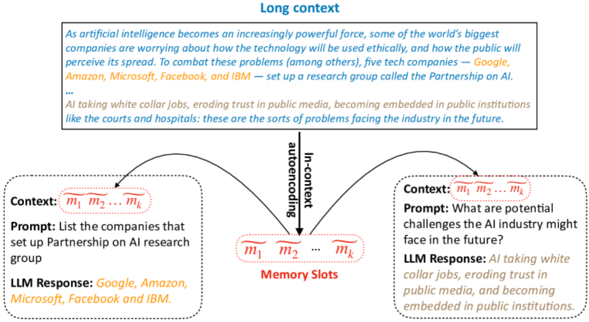
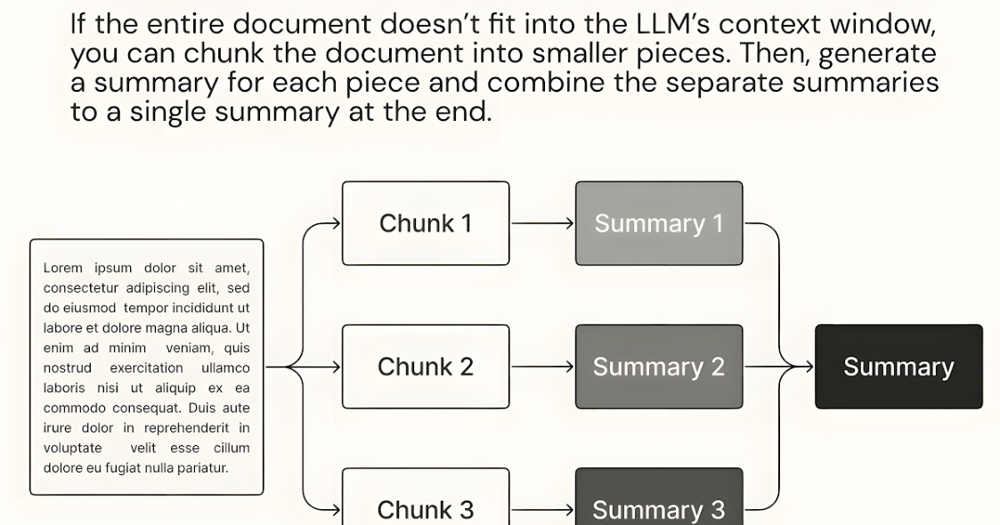

上下文管理
在 Agent 系统中，Memory 的存在并不意味着可以无限制地向模型输入信息。事实上，大语言模型始 终受到 Context Window（上下文窗口） 的限制，即每次推理能够处理的 Token 数量是有限的。如果 系统在每一次推理时都将所有历史对话、所有长期记忆以及所有任务信息全部放入 Prompt 中，不仅 会迅速超过模型的上下文限制，还会显著增加推理成本和延迟。 因此，在实际工程中，除了设计 Memory 系统之外，还必须设计一套 Context Management（上下 文管理）机制。上下文管理的核心目标是：在保证信息相关性的前提下，尽可能减少输入给模型的上 下文长度。换句话说，Agent 需要学会在大量信息中挑选最重要的部分，并对历史信息进行合理压 缩。
在大多数 Agent 系统中，上下文管理通常通过两种关键技术实现：Context Compression（上下文压 缩） 和 Summarization（摘要机制）。
Context Compression
Context Compression 指的是通过各种方法对上下文信息进行压缩，从而减少输入给模型的 Token 数 量，同时尽量保留关键信息。

在一个持续对话的系统中，Conversation History 会不断增长。如果系统简单地保留所有历史对话， 那么随着对话轮数增加，Prompt 的长度会迅速膨胀。Context Compression 的目标就是在不影响理 解的前提下，减少这些冗余信息。
常见的压缩策略包括：
保留最近对话
在很多系统中，只保留最近 N 轮对话作为短期上下文。例如只保留最近 5〜10 轮对话，而将更早的内 容进行压缩或移入长期记忆系统。
信息筛选
通过规则或模型判断哪些信息对当前任务是重要的，只保留关键内容。例如用户需求、约束条件、任 务状态等，而忽略无关闲聊。
语义过滤
利用向量检索或相关性评分，从历史记录中选择与当前问题最相关的部分，而不是简单按时间顺序保 留对话。
通过这些方法，Agent 可以在保持任务理解能力的同时，大幅减少输入上下文的规模。
Summarization
Summarization 是另一种重要的上下文管理方法。与简单删除历史信息不同，Summarization 会对历 史内容进行语义摘要，将长文本压缩成更短但仍然包含关键信息的描述。

例如在长时间对话后，系统可以将几十轮对话总结为一段简短的描述，例如： “用户正在开发一个基于 RAG 的智能客服系统，目前讨论的重点是 Agent 架构设计与记忆系统实 现。”
这样一段摘要可以替代大量历史对话，从而大幅减少 Token 消耗。 在实际系统中，Summarization 通常会在以下场景触发： 对话过长
当 Conversation History 超过某个阈值时，系统会自动对早期对话进行摘要。
任务阶段切换
当一个复杂任务完成某个阶段时，系统可以将当前阶段的过程总结为一段结构化信息，作为下一阶段 的上下文。
长期记忆更新
一些重要的对话内容可以先通过摘要提取关键信息，再存入长期记忆系统。 Summarization 的优势在于，它不仅能够减少上下文长度，还能够帮助 Agent 提取任务的核心信息。 这样在后续推理过程中，模型更容易抓住重点，而不会被大量细节干扰。
总体来看，上下文管理是 Agent 记忆系统中不可忽视的一部分。如果没有良好的 Context Management 机制，即使系统拥有强大的 Memory 存储能力，也很难在实际应用中稳定运行。 通过 Context Compression 减少冗余信息，再通过 Summarization 提炼关键内容，Agent 就能够 在有限的上下文窗口中高效利用历史信息，从而实现更稳定、更高效的推理过程。这也是现代 AI Agent 系统在工程实践中普遍采用的重要设计策略。